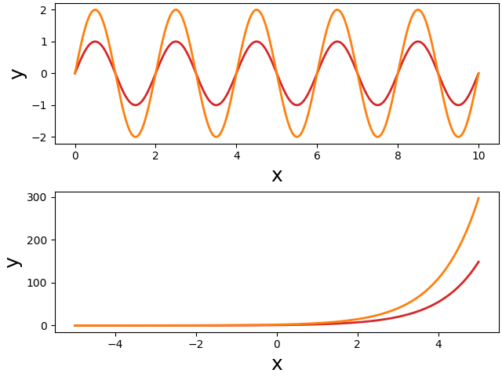
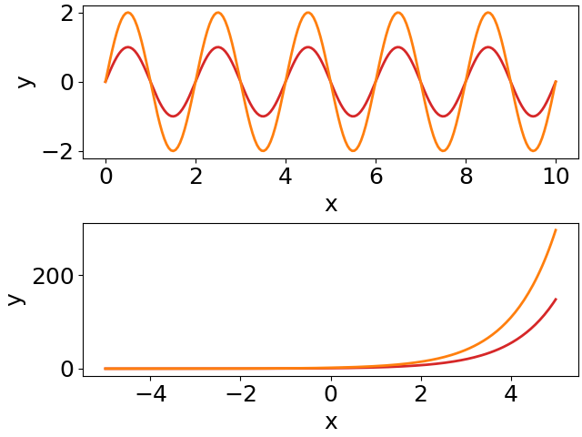
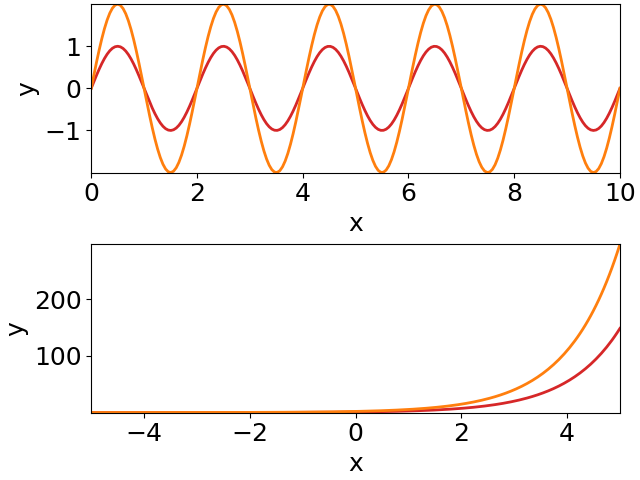

Coding a figure
There are many different ways how to organize your code. This is also true for code generating figures. But there are some aspects that require our attention. In particular, if we want to separate design from content.
Here we start from some spaghetti code and improve it step-by-step. On the way we develop some techniques that make your figure code better maintainable and modifiable.
Quick-and-dirty spaghetti code
Let's create a figure with two panels on top of each other, showing two sine waves and two exponential functions. Of course, the two plots should be properly labeled. Quickly hacking this down results in something like this:
import numpy as np
import matplotlib.pyplot as plt
# the figure:
fig, (ax1, ax2) = plt.subplots(2, 1, constrained_layout=True)
# some data:
x = np.linspace(0, 10, 200)
y = np.sin(2*np.pi*0.5*x)
# first plot:
ax1.plot(x, y)
ax1.plot(x, 2*y)
ax1.set_xlabel('x')
ax1.set_ylabel('y')
# more data:
x = np.linspace(-5, 5, 200)
y = np.exp(x)
# second plot:
ax2.plot(x, y)
ax2.plot(x, 2*y)
ax2.set_xlabel('x')
ax2.set_ylabel('y')
# save the figure:
fig.savefig('plot.pdf')
It produces a figure in the standard design of matplotlib:

Customize your plot
Well, you do not like the standard appearance of the plots. You want larger fonts, and you would like to change the color and width of the plotted lines. You check the documentation of the matplotlib functions and come up with something like this:
import numpy as np
import matplotlib.pyplot as plt
fig, (ax1, ax2) = plt.subplots(2, 1, constrained_layout=True)
# some data:
x = np.linspace(0, 10, 200)
y = np.sin(2*np.pi*0.5*x)
# first plot:
ax1.plot(x, y, color='tab:red', lw=2)
ax1.plot(x, 2*y, color='tab:orange', lw=2)
ax1.set_xlabel('x', fontsize=18)
ax1.set_ylabel('y', fontsize=18)
# more data:
x = np.linspace(-5, 5, 200)
y = np.exp(x)
# second plot:
ax2.plot(x, y, color='tab:red', lw=2)
ax2.plot(x, 2*y, color='tab:orange', lw=2)
ax2.set_xlabel('x', fontsize=18)
ax2.set_ylabel('y', fontsize=18)
fig.savefig('plot.pdf')
As intended, the resulting figure has larger labels and modified line styles:

Modularize your code
This manual and direct way in modifying the plot appearance has severe disadvantages: if you want to change the design of your figures, you need to change colors, font sizes, etc. on every line you use them. Imaging you have many scripts for producing ten figures, each with many subplots. You do not want to change the hue of your red color, because this requires to change this color in many places.
The classical solution to this problem is to
- assign all these repetitive plot parameters to variables, and to
- put your code into functions and pull out these parameters as function parameters:
import numpy as np
import matplotlib.pyplot as plt
def sine_plot(ax, color1, color2, lw, fs):
"""Plots two sine waves with different amplitudes."""
x = np.linspace(0, 10, 200)
y = np.sin(2*np.pi*0.5*x)
ax.plot(x, y, color=color1, lw=lw)
ax.plot(x, 2*y, color=color2, lw=lw)
ax.set_xlabel('x', fontsize=fs)
ax.set_ylabel('y', fontsize=fs)
def exp_plot(ax, color1, color2, lw, fs):
"""Plots two differently scaled exponential functions."""
x = np.linspace(-5, 5, 200)
y = np.exp(x)
ax.plot(x, y, color=color1, lw=lw)
ax.plot(x, 2*y, color=color2, lw=lw)
ax.set_xlabel('x', fontsize=fs)
ax.set_ylabel('y', fontsize=fs)
# parameters defining plot appearance:
fs = 18
color1 = 'tab:red'
color2 = 'tab:orange'
lw = 2
# the figure:
fig, (ax1, ax2) = plt.subplots(2, 1, constrained_layout=True)
sine_plot(ax1, color1, color2, lw, fs)
exp_plot(ax2, color1, color2, lw, fs)
fig.savefig('plot.pdf')
Much better! There are several advantages of this code:
- each subplot is made by a single function and the second part of the short main code takes care of their arrangement. This way, the subplots can be easily rearranged, or even moved to another figure.
- the appearance of the plots can be controlled entirely from the initial part of the short main script. No need to change anything within the functions.
There is, however, one problem. Usually plots are a bit more complex. Some more lines are plotted, for example, and each would need its own color and line style parameter. So the number of parameters tend to explode. And this then makes the functions cumbersome to use, because in the end one has to follow each parameter into the function to figure out which color or text it will change. This gets even worse in case of nested functions.
Use matplotlib's rcParams
One solution to this problem is provided by matplotlib's rcParams. They allow you to change basic properties of your plots in a global manner. That way, you do not need to pass these parameters through function parameters. In our example, we set the font size via rcParams before we create the figure:
import numpy as np
import matplotlib.pyplot as plt
# no need to pass font size as a parameter:
def sine_plot(ax, color1, color2, lw):
x = np.linspace(0, 10, 200)
y = np.sin(2*np.pi*0.5*x)
ax.plot(x, y, color=color1, lw=lw)
ax.plot(x, 2*y, color=color2, lw=lw)
ax.set_xlabel('x')
ax.set_ylabel('y')
def exp_plot(ax, color1, color2, lw):
x = np.linspace(-5, 5, 200)
y = np.exp(x)
ax.plot(x, y, color=color1, lw=lw)
ax.plot(x, 2*y, color=color2, lw=lw)
ax.set_xlabel('x')
ax.set_ylabel('y')
# use rcParams to set font size globally:
plt.rcParams['font.size'] = 18
plt.rcParams['figure.constrained_layout.use'] = True
color1 = 'tab:red'
color2 = 'tab:orange'
lw = 2
# the figure:
fig, (ax1, ax2) = plt.subplots(2, 1)
sine_plot(ax1, color1, color2, lw)
exp_plot(ax2, color1, color2, lw)
fig.savefig('plot.pdf')
The
rcParams
font.size sets the size of all text:

There are additional rcParams that allow for a finer control of font sizes.
Using rcParams already removes quite some clutter from your plot functions and it also improves the main code, because the parameter lists get shorter.
But there are still too many parameters for defining the appearances of the plotted lines (and points, and fill styles, ...).
Plotting styles
Each line you plot has several attributes that you might want to change. It is not only its color, but also its line width, the line style (solid or dashed), transparency, etc. If you take it serious, then all of these should be passed as parameters to the functions that make the plots. This results in very long parameter lists and requires many lines of code in your main script setting these parameters.
This explosion of parameters can be nicely reduced to a single variable for each specific type of line you want to plot. Since these parameters are supplied as keyword arguments to the plot functions, they can be combined into dictionaries. Such dictionaries we call "plotting styles'.
And you can give them functional names. Not ls_red intended as a
"line style for drawing a red line", but something like ls_small for
a "line style for plotting functions with small amplitudes", for
example. Such functional names turn design into content!
import numpy as np
import matplotlib.pyplot as plt
# pass for each line a line style dictionary:
def sine_plot(ax, ls_small, ls_large):
x = np.linspace(0, 10, 200)
y = np.sin(2*np.pi*0.5*x)
ax.plot(x, y, **ls_small) # key-word arguments provided by line style
ax.plot(x, 2*y, **ls_large)
ax.set_xlabel('x')
ax.set_ylabel('y')
def exp_plot(ax, ls_small, ls_large):
x = np.linspace(-5, 5, 200)
y = np.exp(x)
ax.plot(x, y, **ls_small)
ax.plot(x, 2*y, **ls_large)
ax.set_xlabel('x')
ax.set_ylabel('y')
plt.rcParams['figure.constrained_layout.use'] = True
plt.rcParams['font.size'] = 18
# define two line styles:
ls_small = dict(color='tab:red', lw=2)
ls_large = dict(color='tab:orange', lw=2)
# the figure:
fig, (ax1, ax2) = plt.subplots(2, 1)
sine_plot(ax1, ls_small, ls_large) # just pass line styles to the functions
exp_plot(ax2, ls_small, ls_large)
fig.savefig('plot.pdf')
This way we significantly reduce the number of parameters to the plot function. And we achieved another big step towards the separation of design and content. The plot functions just supply the content. How the plots appear is entirely defined by the initial lines of the main script.
We can do better.
Namespace for plotting styles
The rcParams control plotting in a global way. Similarly, we could summarize all our plotting styles in a namespace that we then provide to the functions creating the plots:
import numpy as np
import matplotlib.pyplot as plt
# just pass a namespace `s` holding some plotting styles:
def sine_plot(ax, s):
x = np.linspace(0, 10, 200)
y = np.sin(2*np.pi*0.5*x)
ax.plot(x, y, **s.lsSmall) # use line style from namespace
ax.plot(x, 2*y, **s.lsLarge)
ax.set_xlabel('x')
ax.set_ylabel('y')
def exp_plot(ax, s):
x = np.linspace(-5, 5, 200)
y = np.exp(x)
ax.plot(x, y, **s.lsSmall)
ax.plot(x, 2*y, **s.lsLarge)
ax.set_xlabel('x')
ax.set_ylabel('y')
plt.rcParams['figure.constrained_layout.use'] = True
plt.rcParams['font.size'] = 18
# namespace for plotting styles:
class s: pass
# define two line styles in the `s` namespace:
s.lsSmall = dict(color='tab:red', lw=2)
s.lsLarge = dict(color='tab:orange', lw=2)
# the figure:
fig, (ax1, ax2) = plt.subplots(2, 1)
sine_plot(ax1, s) # just pass the namespace to the functions
exp_plot(ax2, s)
fig.savefig('plot.pdf')
Now, we reduced the parameter lists to just two arguments: the axes and the namespace holding the plotting styles.
Each plot function just gets this namespace. So it is up to the plot function to select an appropriate plotting style from this namespace. In all the examples before, the plotting styles were defined by the caller of the plot functions. By whatever parameters where passed to the function the design of the plotted lines was set. By just passing the namespace, we give this control back to the plot function. And by using functional names for the plotting styles, the plot functions do not need to make decisions on design.
Key is to use functional names for the plotting styles. In this way it
can be easily ensured that similar things get plotted in the very same
way. You can set a few line styles for stimuli, for example, that were
used to probe the function of a neuron (e.g. lsStimA,
lsStimB). And a few other styles, for example, for the resulting
responses (e.g. lsRespA, lsRespB).
Central function for controlling the design
As a last step we pull out the initial lines of the main script into a function that we place into a separate module.
This is our plotstyle.py module, that defines a plot_style()
function. This function returns a namespace with various plotting
styles and sets
rcParams:
import matplotlib.pyplot as plt
def plot_style():
# namespace for plotting styles:
class s: pass
s.lsSmall = dict(color='tab:red', lw=2)
s.lsLarge = dict(color='tab:orange', lw=2)
# global settings:
plt.rcParams['figure.constrained_layout.use'] = True
plt.rcParams['font.size'] = 18
plt.rcParams['axes.xmargin'] = 0
plt.rcParams['axes.ymargin'] = 0
return s
And this is how our script looks like:
import numpy as np
import matplotlib.pyplot as plt
from plotstyle import plot_style # import common plot style
def sine_plot(ax, s):
x = np.linspace(0, 10, 200)
y = np.sin(2*np.pi*0.5*x)
ax.plot(x, y, **s.lsSmall)
ax.plot(x, 2*y, **s.lsLarge)
ax.set_xlabel('x')
ax.set_ylabel('y')
def exp_plot(ax, s):
x = np.linspace(-5, 5, 200)
y = np.exp(x)
ax.plot(x, y, **s.lsSmall)
ax.plot(x, 2*y, **s.lsLarge)
ax.set_xlabel('x')
ax.set_ylabel('y')
s = plot_style() # use common plot style
# the figure:
fig, (ax1, ax2) = plt.subplots(2, 1)
sine_plot(ax1, s)
exp_plot(ax2, s)
fig.savefig('plot.pdf')
A single line of code (the first one of the main script) defines all the global design of your plot. The remaining main script arranges the subplots. And the plot functions provide and plot the data and the content (e.g. axes labels, text, arrows), without setting or influencing the design.
The design of all the plots can be easily modified in a single place - the plot style module.
Because we added a few more rcParams, the figure looks a little bit different:

How to structure your code
Continue reading with suggestions on how to structure your code.